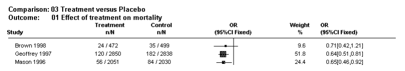

A systematic review provides a summary of the data from the results of a number of individual studies. If the results of the individual studies are similar, a statistical method (called meta-analysis) is used to combine the results from the individual studies and an overall summary estimate is calculated. The meta-analysis gives weighted values to each of the individual studies according to their size. The individual results of the studies need to be expressed in a standard way, such as relative risk, odds ratio or mean difference between the groups. Results are traditionally displayed in a figure called a forest plot, like the one below.
Exploring heterogeneity
Heterogeneity can be assessed using the ‘eyeball’ test or more formally with statistical tests, such as the Cochran Q test. With the ‘eyeball’ test one looks for overlap of the confidence intervals of the trials with the summary estimate. In the example above note that the dotted line running vertically through the combined odds ratio crosses the horizontal lines of all the individual studies indicating that the studies are homogenous. Heterogeneity can also be assessed using the Cochran chi-square (Cochran Q). If Cochran Q is statistically significant there is definite heterogeneity. If Cochran Q is not statistically significant but the ratio of Cochran Q and the degrees of freedom (Q/df) is > 1 there is possible heterogeneity.
Note: The level of significance for Cochran Q is often set at 0.1 due to the low power of the test to detect heterogeneity